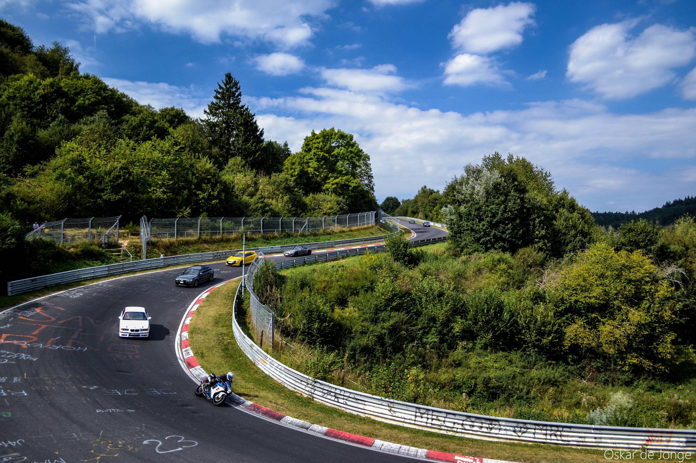

Almanya'da, Köln'ün 90km güneybatısında, Nürburg Kalesi ve Eifel Dağları etrafında dolaşan tarihi pist. "Green Hell" (yeşil cehennem) olarak da bilinen, birçok spor otomobilin geliştirilmesinde rol oynayan ve birçok yarışın da yapıldığı belirleyici bir pist. F1, GT3, DTM, WEC, Le Mans gibi yarışlara ev sahipliği yapan pist, pekçok farklı versiyonda kullanılıyor. Ancak Yeşil Cehennem lakabını ikonikleşmiş logosunda da görebildiğiniz 'Nordschleife' kısmından alıyor.
Neden 'yeşil cehennem'? Üç dünya şampiyonluğu bulunan İskoç Formula 1 pilotu Sir Jackie Stewart (uçan İskoç), 1968 Almanya Grand Prix'sinde yağmurlu ve sisli bir zafer kazandıktan sonra Nürburgring'e 'Yeşil Cehennem' adını verdi. Böylece bu takma ad, pistin karakterini tanımlamak için kullanılmaya başlandı.
20.81km uzunluğunda ve 154 viraja sahip olan pist, pekçok pilotun hayatına mâl olmuştu. 3 kez dünya F1 şampiyonu olan Niki Lauda, 1976 Nordschleife Gran Prix'indeki kazada yüzünün büyük kısmı yanmıştı.
Pist üzerinde hayranların çizdiği graffitiler, bazen buradaydım' demek iken bazen de birilerini anmak için saygı duruşu anlamına gelebilir. Ring kültüründe yer edinmiş bu gelenek devasa bir aidiyet topluluğunca devam ettiriliyor.
Bugün spor otomobil üreticileri yeni modellerini, burada geliştiriyor ve bu pisti referans alıyorlar. Reklamlarında, lansmanlarında bu pistteki tur zamanlarını bir övünç kaynağı olarak kullanıyorlar. Anlayacağınız Nürburgring pazarlamada da etkili bir fenomen halinde.
Pist üzerinde hayranların çizdiği graffitiler, bazen buradaydım' demek iken bazen de birilerini anmak için saygı duruşu anlamına gelebilir. Ring kültüründe yer edinmiş bu gelenek devasa bir aidiyet topluluğunca devam ettiriliyor.
Kimin daha hızlı olduğunu anlamak için Ring, benzin severlerin 'Valhalla'sı konumunda. Kimisi için de gerçek anlamda bir cehennem... Ama ne olursa olsun, hep olduğu gibi bugün de en iyiye karar veren yer Nürburgring.
Pist rekoru: 5:19.55 - Porsche 919 Hybrid Evo
En hızlı önden çeker: 7:44.8 - Honda Civic Type R (FL5)
En hızlı dört kapılı: 7:18.36 - Jaguar XE SV Project 8
En hızlı ilk 10 yol otomobili: (yavaştan hızlıya)
(6:57) Porsche 918 Spyder (Weissach Packge)
(6:56.4) Porsche 911 GT3 RS (991.2)
(6:55.3) Porsche 911 GT3 (992)
(6:52.01) Lamborghini Huracan Performante
(6:47.3) Porsche 911 GT2 RS
(6:44.97) Lamborghini Aventador SVJ
(6:44.84) Porsche 911 GT3 RS (992)
(6:43.616) Mercedes AMG GT Black Series
(6:43.300) Porsche 911 GT2 RS Manthey-Racing
(6:35.183) Mercedes AMG One